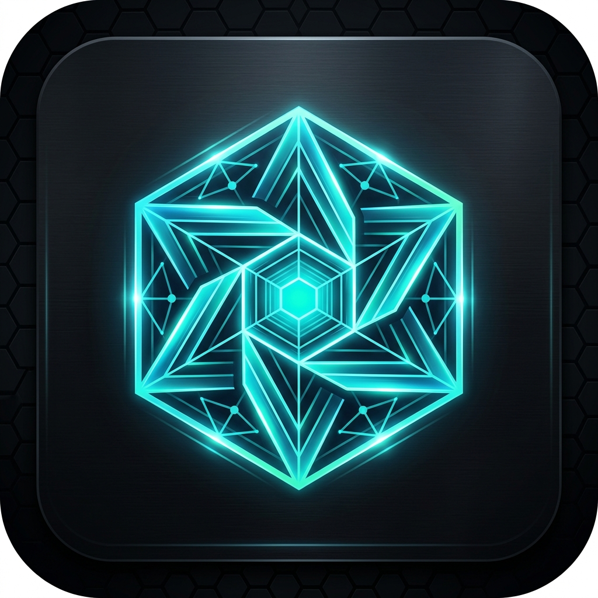

УСТАНОВКА NEXUS
Параметры установки
Выберите расположение файлов лаунчера и дополнительные компоненты для быстрой и плавной игры.
Требуется на диске: 420 МБ
|
Свободно: 128.4 ГБ (C:)

Выберите расположение файлов лаунчера и дополнительные компоненты для быстрой и плавной игры.